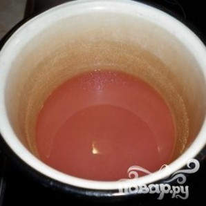
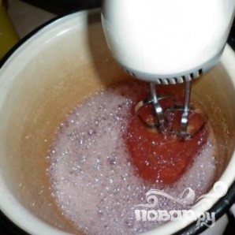
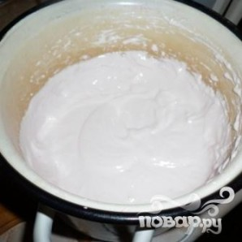
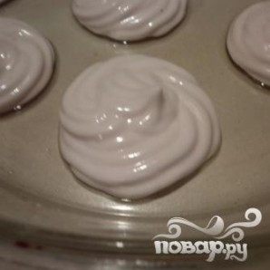

Домашний зефир - это настоящее волшебство кондитерского искусства.
Нежные, тающие во рту облачка с фруктовым вкусом требуют точности в приготовлении, но результат превосходит все ожидания.
Настоящее наслаждение для сладкоежек!
 Чтобы желатин набух, замочим его в холодной воде (делаем это заранее). В кастрюлю насыпаем сахар, наливаем воды и доводим до кипения. Добавляем при желании пищевых красителей и ароматизаторов. Когда сироп закипит, варим три минуты и добавляем желатин. Снимаем с огня и хорошенько перемешиваем.
 Минут пять миксером взбиваем еще горячую смесь. Затем минут пять смеси даем отдохнуть. Затем снова немного взбиваем.
 Добавляем в смесь лимонной кислоты и соду. Минут десять взбиваем еще. Масса должна стать густой, а ее объем должен заметно увеличиться.
 На силиконовую или стеклянную поверхность с помощью ложки или шприца выкладываем предварительно охлажденную массу, масса получается довольно липкой. Оставляем заготовки, при комнатной температуре, на целую ночь.
Утром половинки зефира снимаем и по две штучки склеиваем. Зефир готов.